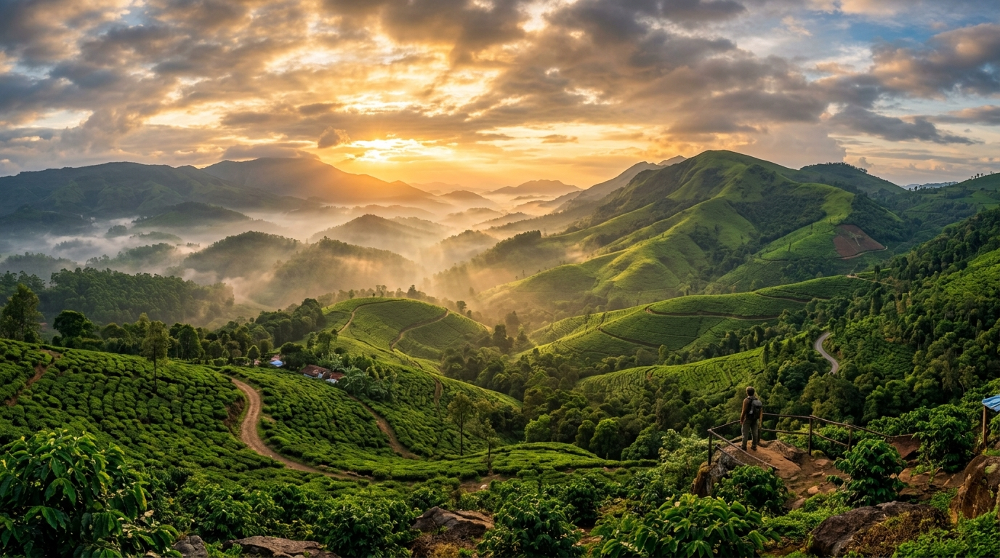

About Chikmagalur Backpacking Trip
Known as the Coffee Capital of Karnataka, Chikmagalur is nestled in the majestic Baba Budan Giri range of the Western Ghats. This curated 2-Day, 2-Night backpacking experience takes you far away from city bustle into lush green hills, rolling clouds, cascading waterfalls, and centuries-old architectural wonders.
Whether you want to conquer Mullayanagiri (the highest peak in Karnataka), feel the adrenaline on Yagachi Dam water sports, soak in the golden hues of Hirekolale Lake, or be mesmerized by the intricate 12th-century stone carvings of Belur and Halebidu, this tour is the ultimate blend of soft adventure, relaxation, nature and culture.
Trip Highlights
Here are the key landmarks and experiences you will enjoy on this trip:
Mullayanagiri Peak
Summit the highest peak in Karnataka at 1,930 meters and enjoy panoramic views above the clouds.
Honnamana Halla Falls
A tranquil natural waterfall tucked inside dense Western Ghats greenery, perfect for fresh mountain vibes.
Baba Budangiri & Z Point
Trek along the scenic ridge towards Z Point, capturing breathtaking 360-degree valley vistas.
Hirekolale Lake Sunset
Watch golden reflections dance across calm waters framed by coffee estates and Western Ghats hills.
Yagachi Dam Water Sports
Indulge in thrilling water adventures like jet skiing, kayaking, bumper rides and speed boating.
Belur & Halebidu Temples
Marvel at the UNESCO World Heritage Hoysala soapstone architecture, intricate sculptures & heritage.
Campfire & Stargazing
Bond with fellow trekkers over a warm campfire, music, stargazing and delicious Malnad-style food.
Coffee Estate Stay
Immerse yourself in aromatic coffee plantations, crisp morning air and lush evergreen landscapes.
Detailed Itinerary
Click on day tabs below to view day-wise plans or review the complete itinerary:
🚌 Day 0 Overnight Departure from Bangalore
Friday NightPickups across Bangalore
Board our comfortable private transport at your designated pickup point in Bangalore. Meet your friendly Trekflix trip leader and fellow travelers.
Overnight Journey to Chikmagalur
Enjoy a smooth overnight ride via Hassan highway with quick stops as we head towards the misty Western Ghats.
⛰️ Day 1 Mullayanagiri, Waterfalls, Z Point & Campfire
SaturdayArrival & Freshen Up
Arrive at our scenic Chikmagalur homestay surrounded by coffee plantations. Freshen up and enjoy a piping hot traditional breakfast with freshly brewed coffee.
Mullayanagiri Summit Trek
Head towards Mullayanagiri, Karnataka’s highest peak (1,930 m). Ascend the stone steps while clouds float around you, and visit the serene Shiva temple at the top.
Honnamana Halla Falls
Visit the beautiful Honnamana Halla waterfall cascading down moss-covered rocks. Soak your feet in crystal fresh streams and click memorable pictures.
Baba Budangiri & Z Point Trek
Proceed to Baba Budangiri hills and take the scenic ridge hike to Z Point, famous for dramatic cliff-side drops and 360-degree panoramic mountain vistas.
Lunch Break
Enjoy a flavorful Malnad-style lunch (self-sponsored) at a popular local eatery.
Hirekolale Lake Sunset
Relax by the calm shores of Hirekolale Lake as the sun sets behind the Western Ghats hills, casting golden reflections across the water.
Return to Stay, Campfire & Dinner
Head back to the stay. Gather around a cozy campfire with music, fun community games, and savor a hearty hot dinner (included) under a canopy of stars.
🏛️ Day 2 Yagachi Water Sports, Belur & Halebidu Temples
SundayBreakfast & Checkout
Wake up to the sounds of chirping birds in the coffee estate. Enjoy a fulfilling breakfast, check out from the stay, and board our vehicle.
Yagachi Dam Water Sports
Arrive at Yagachi Dam and dive into exciting water activities: jet ski rides, speed boating, banana boat rides, and kayaking (activities self-sponsored).
Lunch Break
Stop for delicious traditional South Indian meals along the route.
Belur Chennakeshava Temple
Explore the 12th-century architectural masterpiece of the Hoysala Empire at Belur, featuring world-renowned stone carvings of celestial dancers and deities.
Halebidu Hoysaleshwara Temple
Visit the UNESCO World Heritage Hoysaleshwara Temple in Halebidu, famous for its magnificent dual temple shrines and monolithic Nandi statues.
Depart for Bangalore
Begin the return journey towards Bangalore. Reflect on the weekend memories, share photos, and enjoy music with the group.
Arrival in Bangalore
Reach Bangalore and get dropped off at the same pickup points. Say goodbye to your fellow trekkers until the next Trekflix adventure!
Pickup & Drop-off Points in Bangalore
Choose your most convenient pickup stop. Drop-offs on Sunday night will follow the same reverse route:
Inclusions & Exclusions
✓ What's Included
- ✓ Transportation: Round-trip private transport from Bangalore
- ✓ Meals: 2 Breakfasts and 1 Hot Dinner included
- ✓ Stay: Cozy homestay / dorm / camping with clean washrooms
- ✓ Campfire: Evening campfire gathering with music & community fun
- ✓ Trip Leader: Experienced Trekflix coordinator guiding throughout
- ✓ Safety: First-aid kit and emergency assistance
✕ What's Excluded
- ✕ Jeep ride to viewpoints (if mandated by forest authorities)
- ✕ Entry / sightseeing charges at viewpoints and heritage monuments
- ✕ Water sports activities at Yagachi Dam (pay per ride)
- ✕ Lunches and personal snacks/drinks
- ✕ Personal travel / medical insurance
- ✕ Any personal expenses or purchases
Things to Carry
🎒 Essentials & Bags
- Govt ID Proof (Aadhar / Driving License)
- Small backpack (20-30L) for day trips
- 2 Water bottles (1L each)
- Power bank & mobile charger
👕 Clothing & Trek Wear
- Comfortable quick-dry trek pants/t-shirts
- Light jacket / sweater for cool evenings
- Raincoat or poncho (for monsoon / mist)
- Extra set of dry clothes and socks
👟 Footwear & Gear
- Trekking or sports shoes with good grip
- Flip-flops / sandals for homestay
- Torch / Headlamp with extra batteries
- Cap & UV sunglasses
💊 Toiletries & Medical
- Personal medication & ORS packets
- Sunscreen & mosquito repellent
- Hand sanitizer & quick-dry towel
- Lip balm & personal hygiene items
Photo Gallery
Glimpses of what awaits you in Chikmagalur:



Frequently Asked Questions
Absolutely! The Chikmagalur Backpacking Trip is designed with soft adventures and well-paced sightseeing. Over 60% of our travelers join solo, and our Trekflix trip coordinators ensure a friendly, safe, and welcoming community vibe for everyone.
We stay in a verified, clean, and scenic coffee estate homestay with options for dormitory or camping with separate washroom and sleeping arrangements for men and women.
The package includes 2 fresh breakfasts and 1 delicious hot dinner at the homestay (with both veg and non-veg local Karnataka / Malnad specialties). For lunches, we stop at verified hygienic restaurants where you can choose your preferences.
Yagachi Dam offers speed boating, banana boat rides, jet skiing, bumper rides, and kayaking. Life jackets are mandatory and provided on-site. The activities are optional and can be paid directly at the water sports counter.
Chikmagalur is famous for its misty rain and greenery. The trip runs smoothly throughout the year. We recommend carrying a poncho or raincoat to enjoy the ethereal Western Ghats weather comfortably.
Cancellations made 7+ days prior to departure receive a full refund (minus nominal payment gateway fees). Within 3-7 days, you can reschedule to any future Trekflix batch free of cost.